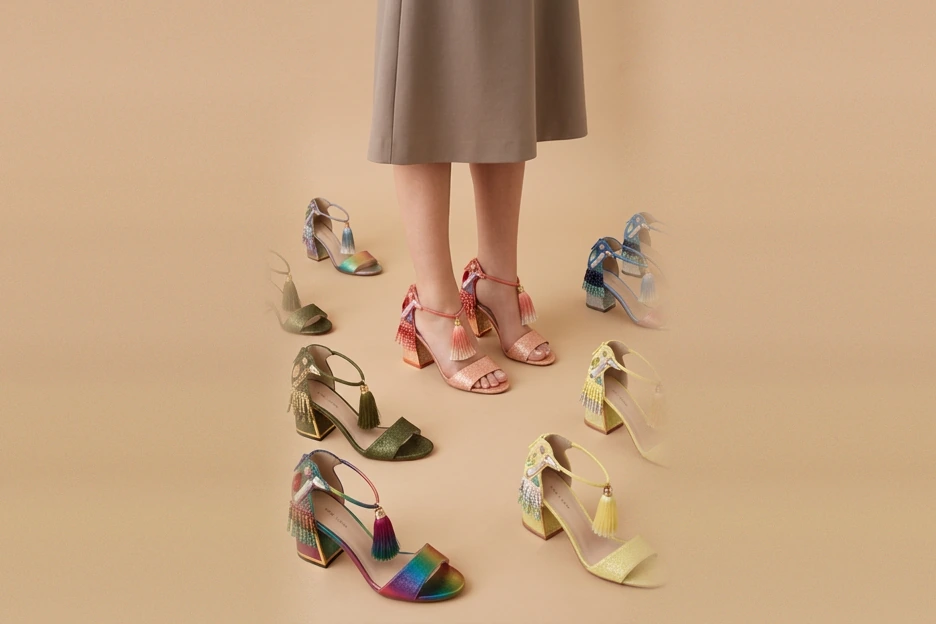
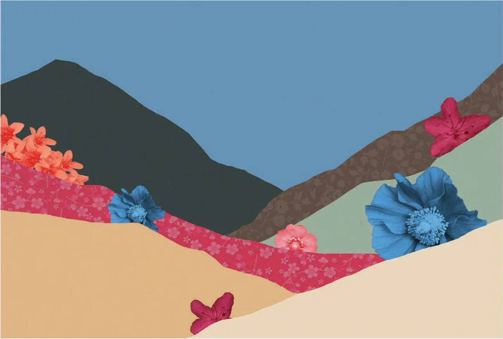
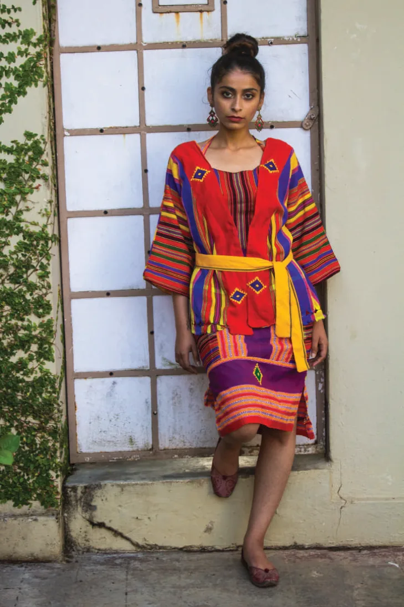
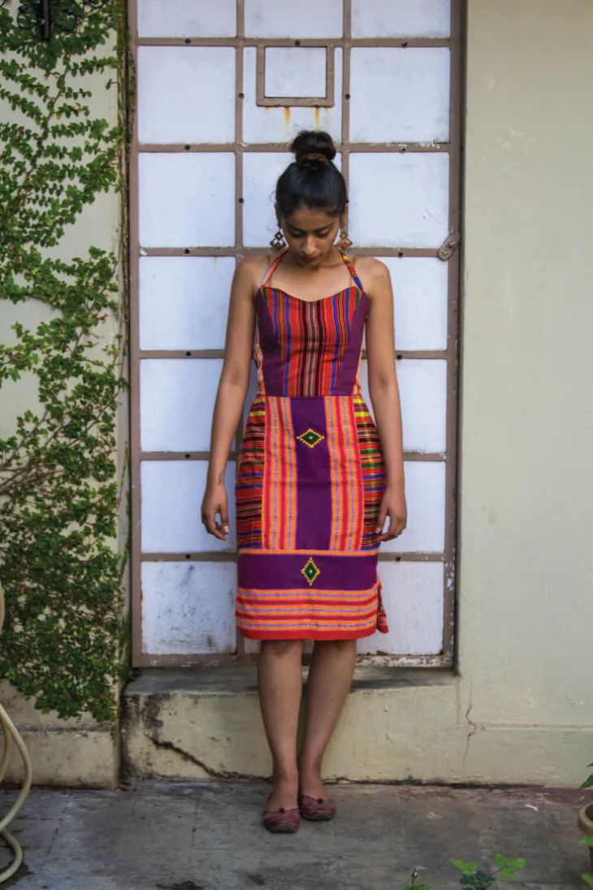

Design Portfolio
Sanika
Paranjpe
Accessories and handbag designer with 4+ years of experience across men’s, women’s and kids’ bags, small leather goods and technical accessories for brand, retail and hospitality clients. I take products from concept and mood boards through sketches, tech packs, BOMs, costing and sampling to production, including product testing, coordinating vendors, factories and artisans across leather, PU, PVC, canvas, polyester and neoprene.
- Accessories
- Textile
- Apparel

Accessories
Tech packs, colourways and collections for Pelicans London, Aranyani, freelance client EEBAGAA and Kat Maconie, from canvas rucksacks and kids’ backpacks to leather totes and embellished sandals.
- EEBAGAA
- BMW Alpina CCB
- Canvas Bags
- Back to School
- Aranyani SLGs
- Kat Maconie Footwear

Textile
Handspun Eri silk dyed with turmeric, indigo and onion peel; prints drawn from palace mosaics and mountain flowers; embroidery samples; and a fellowship building livelihoods in Assam.
- Vasudhaiva Kutumbakam
- The Orient
- Sawai
- Blooming Abode
- Textile Samples
- Towards Better Livelihoods


Apparel
Ensembles in Khasi, Jaintia, Rabha, Hajong and Assamese handwoven fabrics, with surface development, export-house sampling and pattern-making experiments.
- Saadgi
- Indian Wear
- Surface Development
- The Orient
- Kaftaan
Download the portfolios
The original PDF portfolios, for print or offline viewing.